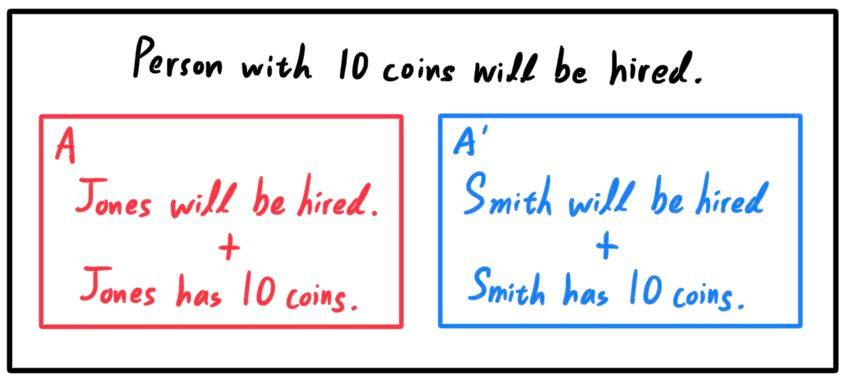
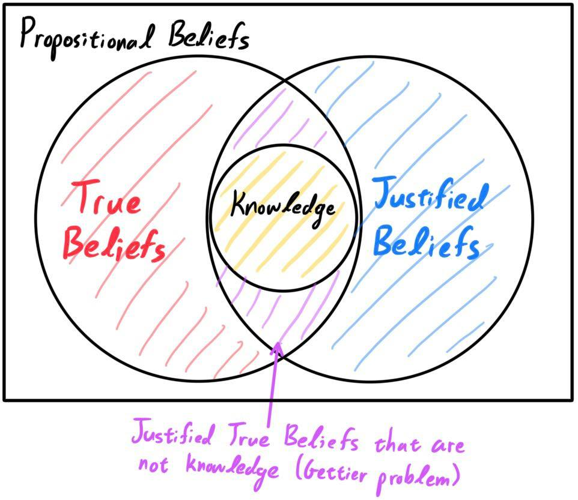

Epistemology is the branch of philosophy that is concerned with knowledge, including the nature, origin, scope, its epistemic justification, rationality of belief, and various related issues. It studies what we know, how we come to know it, and what it means to know something.
The first step to understand epistemology is to understand the nature of
knowledge.
Types of Knowledge
Since the general idea of knowledge is difficult to tackle on its own, we can partition it into three types:
- Descriptive knowledge (knowing-that) is the knowledge of facts that can be expressed as a statement/ (which are defined as meaningful declarative sentences that are true or false).
- Procedural knowledge (knowing-how) is the knowledge exercised in the performance of some task. Unlike descriptive knowledge, which involves knowledge of specific facts or propositions, procedural knowledge involves one's ability to do something (e.g. "I know how to change a flat tire."). A person doesn't need to be able to verbally articulate their procedural knowledge in order for it to count as knowledge, since procedural knowledge requires only knowing how to correctly perform an action or exercise a skill.
- Acquaintance knowledge (knowing-of) is familiarity with a person, place, or thing, typically obtained through perceptual experience (e.g. "I know Sam.").
Justified-True-Belief Definition of Knowledge & Gettier Problems
Let us focus on descriptive knowledge, which can be stated in the form
\[S \text{ knows that } p\]
where $S$ refers to the knowing subject, and $p$ to the proposition that is known. Plato, in his book
Theaetetus, introduces the classical definition of (propositional) knowledge as following three criteria, known as the
Justified-True-Belief condition. In fact, Plato argued that there was a distinction between knowledge and true belief, leading to the definition of knowledge as
justified true belief. For a person to have knowledge that $p$ (for any particular $p$),
- (Belief). The person believes that $p$. This belief might be more or less confident, but what is important is that the belief must exist. It can clearly been seen that having this belief is not sufficient; one must also have good reasons for that belief, because otherwise there would be no reason to prefer one belief over another.
- (Truth). The person's belief that $p$ needs to be true. If it is incorrect, then no matter what else is good or useful about it, it is not knowledge. It would be something lesser.
- (Justification). The person's belief that $p$ needs to be well supported, such as by being based upon some good evidence or reasoning, or perhaps some other kind of rational justification. Otherwise, even if it is true, the belief may as well be a lucky guess. It would be correct without being knowledge. For example, if I conclude that a coin flip will be tails, and the flip ends up being tails, then my declaration is not knowledge, even though it is a true belief.
If a particular $p$ satisfies these three conditions, then $p$ is an instance of knowledge. That is, a subject $S$ knows that a proposition $P$ is true if and only if
- $P$ is true, and
- $S$ believes that $P$ is true, and
- $S$ is justified in believing that $P$ is true
Note some of the implications of this definition. The classification of $p$ as knowledge or not is actually dependent on the knowing subject. If subject $S_1$ believes and $S_2$ does not, then $p$ is considered knowledge with respect to $S_1$ and not with respect to $S_2$. Interesting. The second condition of truth is very loosely stated: is this an absolute truth or a truth with respect to a particular paradigm? Netwon's calculations of gravitational forces in the Newtonian paradigm were considered truths, but then were overturned in the Relativitistic paradigm. Who knows what other paradigm shifts may occur in the future? Third, the definition of well-supported is vague and needs further clarification. We will not go down this rabbit hole now.
This classical definition of knowledge is now generally known to be false, shown by the
Gettier problems introduced by the American philosopher Edmund Gettier in 1963. The original problem is described:
Suppose that Smith and Jones have applied for a certain job. But Smith has been told by the company president that Jones will win the job. Smith combines that testimony with his observational evidence of there being ten coins in Jones's pocket. (He had counted them himself — an odd but imaginable circumstance.) Let us call this belief $A$.
\[A = \begin{cases} \text{Jones will be hired.} \\ \text{Jones has 10 coins in his pocket.} \end{cases}\]
And he proceeds to infer that whoever will get the job has ten coins in their pocket, a belief that we will call $B$.
\[B = \text{Whoever gets the job has 10 coins in their pocket.} \]
Notice that $A$ entails $B$, and that Smith accepts $B$ on the grounds of $A$, for which he has strong evidence. In this case, Smith is clearly justified in believing that $B$ is true due to the evidence that Jones will get the job. But it turns out that Smith, not Jones, actually got the job! And also, unknown to Smith, he himself has 10 coins in his pocket! Thus, it turns out that the person with 10 coins in his pocket did indeed get the job!
To clarify, we can see that all three conditions are met for the proposition that "the person with 10 coins in his pocket will get the job."
- Truth. The person with 10 coins in his pocket (Smith) did indeed get the job.
- Belief. Smith trivially belives this proposition.
- Justification. Smith has good justification in believing this since he saw Jones get congratulated and him having 10 coins in his pocket.
The reader can clearly see that the justification $A$ points to the fact that
Jones, not Smith, should get the job (and have the 10 coins). If Jones did indeed get the job, it is safe to say that Smith knows that the man with 10 coins will get the job.
Let us explain this scenario. Let us denote $A$ as the belief that Jones will be hired and Jones has 10 coins in his pocket, and let us denote $A^\prime$ as the belief that Smith will be hired and Smith has 10 coins in his pocket. If Smith had replaced his proposition from $B$ to $A$, then all will be well. However, Smith used $A$ to make what he thought was an equivalent statement $B$. He mistakenly thought that $A \iff B$, when it is actually
\[A \implies B\]
More accurately, this new proposition $B$ allows a bit of leeway for another scenario $A^\prime$ to squeeze in. Now, we get the equivalent statement.
\[A \text{ or } A^\prime \iff B\]
Therefore, this statement $B$ that Smith proposes is a
generalization of the belief $A$ that he thought. More specifically, he does
not believe in $A^\prime$, but it doesn't matter whether he doesn't believe in $A^\prime$ since $A^\prime \implies B$ but not the converse.

Therefore, the belief and justification of $B$ is well established. Now, with the unlikely event of $A^\prime$ happening, the condition of truth is also met, and by JTB, this $B$ is established as knowledge. But this leads to a sort-of contradiction since Smith was not betting on $A^\prime$ happening: it was an exceptional event that Smith did
not know about, even though it implies the proposition that he concluded. This proves that JTB is not a sufficient condition for knowledge.
A simpler case of the Gettier problem can be stated.
Smith wants to know the time. He checks the time by looking at a clock on a wall, which says that it is 3pm, and states his proposition that "it is 3pm." However, unbeknownst to Smith, the clock is broken. But even then, it actually happens to be 3pm at the time of Smith's inquiry, coincidentally.
Now, in this case, we can safely conclude that Smith did not
know the time; he just got lucky. But all three conditions were met:
- Truth. It is indeed 3pm.
- Belief. Smith believes that it is 3pm.
- Justified. Smith's looking at the clock (even though it was broken) was fair justification that was 3pm.
The widespread response to the Gettier problem has been to admit that justification, truth, and belief are individually necessary but jointly insufficient for knowledge. Therefore, there must be some
fourth condition on knowledge. As of now, there is no universally accepted fourth condition.

Belief
Truth
Inductive & Deductive Logic
Logic in general is the attempt to give an abstract theory of what makes some arguments compelling and reliable. Let us quickly define the difference between the two types of logic:
- Deductive logic is the most familiar kind of logic. We begin with a general statement, or hypothesis, and we examine the possibilities to reach a specific logical conclusion. That is, we begin with a premise that is proven through observations. However, if a single observation contradicts the premise, the entire premise must be rejected. These arguments have the feature that if the premises of the argument are true, the conclusion is guaranteed to be true.
- Say that we have a coin that has both sides labeled with 0. With this information, we start with the general theory that the coin has a 100% chance of landing on 0, and claim that the next 10 coin flips will all land 0s. Indeed they do, and our claim is correct.
- Our premise can be that "all men are mortal" and "Socrates is a man." Therefore, we can come to the conclusion that "Socrates is a mortal." A deductively valid argument might have false premises. In that case the conclusion might be false as well.
- Inductive logic begins by making many observations, discerning a pattern, and making a generalization or inferring an explanation/theory. However, one can never be absolutely certain on the truth of a theory.
- Say that we have observed 10 consecutive coin flips that all landed 0. From these observations, we infer a general theory that the coin has a 100% probability of landing on 0.
In science, there is a constant interplay between inductive inference (based on observations) and deductive inference (based on theory), until we get closer and closer to the truth, which we can only approach but not ascertain with complete certainty. The theory is constructed and modified using inductive reasoning and then tested through deductive reasoning.
A Priori & A Posteriori Distinction
The terms
a priori ("from the earlier") and
a poteriori ("from the later") are used to distinguish types of knowledge, justification, or argument by their reliance on empirical evidence or experience. Here we distinguish knowledge in two types:
- A priori knowledge is that which is independent from current experience, e.g. mathematics, tautologies, and deduction from pure reason.
- A posteriori knowledge is that which depends on empirical evidence, e.g. most fields of science and aspects of personal knowledge.
For example, consider the proposition:
If George V reigned at least four days, then he reigned more than three days.
This is something that one knows
a priori because it expresses a statement that one can derive by reason
alone. But the following proposition:
George V reigned from 1910 to 1936.
is something that (if true) one must come to know
a posteriori because it expresses an empirical fact unknowable by reason alone.
Analytic & Synthetic Distinction
The terms
analytic and
synthetic are used to distinguish between propositions. We distinguish propositions by two types:
- Analytic propositions are true or not true solely by virtue of the meaning of its constituent terms, i.e. whether the predicate concept is contained in the subject concept.
- Synthetic propositions are propositions whose predicate concept is not contained in the subject concept.
For example, the statement
"Ophthalmologists are doctors."
is an analytic sentence that has been characterized as one whose truth depends upon the meanings of its constituent terms. This stands in contrast to the synthetic sentence, such as
"Ophthalmologists are rich."
whose truth depends also upon the facts about the world that the sentence represents (e.g. that ophthalmologists are indeed rich).
An epistemological characterization is that analytic sentences are those whose truth can be known merely by knowing the meanings of the constituent terms, as opposed to having also to know something about the represented world. Compare the following two sets of sentences.
- Some doctors that specialize on eyes are rich.
- Some ophthalmologists are rich.
- Many bachelors are ophthalmologists.
- People who run damage their bodies.
- If Holmes killed Sikes, then Watson is dead.
- All doctors that specialize on eyes are doctors.
- All ophthalmologists are doctors.
- All bachelors are unmarried.
- People who run move their bodies.
- If Holmes killed Sikes, then Sikes is dead.
The obvious distinction is that while the truth or falsity of those in set 1 may depend on the setting in which the statement is spoken, those in set 2 are unambiguously true
by definition of the constituent terms. Here is another example that may be harder to distinguish.
- "All bodies are extended (that is, occupy space)." is Immanuel Kant's own example of an analytic proposition. Indeed, a body is anything that does occupy space. The statement "All bodies are heavy (that is, experience a gravitational force)." is synthetic. Even though it is indeed the case that all bodies do experience gravity (due to physics), there is nothing in the definition of a body that touches on gravitational characteristics. Therefore, this is a true, synthetic statement.
- "All bachelors are unmarried." is analytic since the concept of unmarried is contained within the definition of bachelor. However, to say that "All bachelors are alone." is synthetic since the concept "bachelor" does not contain the concept "alone."
4 Types of Propositions
Kant defines a priori and a posteriori propositions as follows:
- A priori proposition is a proposition whose justification does not rely upon experience. It can be validated by experience, but is not grounded in experience.
- "All bachelors are unmarried."
- "7+5=12."
- A posteriori proposition is a proposition whose justification does reply upon experience. It is validated by and grounded in experience.
- "All bachelors are unhappy."
- "Tables exist."
These two distinctions yields 4 types of propositions. For the sake of simplicity, we can think of the analytic-synthetic distinction as determining whether the proposition
introduces new or repetitive information, while the a priori-a posteriori distinction determines whether the proposition can be
verified internally within the mind or not.
- Analytic a priori propositions has a predicate concept that is contained within its subject concept and does not rely upon experience.
- e.g. "All bachelors are unmarried." The concept of "unmarried" is contained in the concept of "bachelors" by definition. Furthermore, the truth (it is true) of this statement is completely independent of experience.
- Synthetic a priori propositions has a predicate concept that is not contained within its subject concept and does not rely upon experience.
- e.g. "The sum of the angles of a triangle is equal to 180 degrees." The concept of the angles adding up ot 180 degrees is not contained in the concept of the triangle by definition. This is because the triangle is defined to be a figure with 3 sides (within Euclidean space, but let's assume this to be taken for granted), and therefore this extra statement of the angles adding up to 180 degrees is something new, an additional characteristic that is not intrinsic to the concept of the triangle itself. By this logic, the statement "All triangles have 3 sides." is not synthetic, but analytic a priori. Furthermore, the truth of this proposition does not rely on experience since this truth can be realized by our imagination.
- According to Kant, most, but not all, propositions of mathematics and geometry are synthetic a priori propositions.
- Analytic a posteriori propositions has a predicate concept that is contained within its subject concept and does rely upon experience.
- This kind of proposition does not make sense and is nonexistent. Think about it. The fact that a proposition is analytic must mean that the truth of the proposition must rely solely on the meaning of the constituent terms (i.e. whether the subject concept contains the predicate concept within its definition). This is clearly a priori and does not have any dependence upon experience. Therefore, if any proposition is analytic, we can automatically infer it to be a priori.
- Synthetic a posteriori propositions has a predicate concept that is not contained within its subject concept and does rely upon experience.
- e.g. "All creatures with hearts have kidneys." The concept of "having kidneys" is not contained within the concept of "creatures with hearts," so this is synthetic. Furthermore, this statement does indeed rely on experience: you need to look at the outside world to verify the truth of the statement.
Kant argues that it is easy to identify an analytic proposition. To know an analytic proposition, one need not consult experience. Instead, one needs merely to take the subject and "extract from it, ..., the required predicate." This can be done for analytic propositions since the predicate concept is contained in the subject concept (e.g. "3 sides" is contained within "triangle"). If one finds the predicate contained in the subject, then this analytic proposition is true. This entire process described just now can be done fully within the mind, and thus this proves that all analytic propositions are a priori; there are no a posteriori analytic propositions.
Now that we have (somewhat) defined knowledge, we can move on to the idea of how knowledge is gotten and applied. How are ideas formed? What is the source of our knowledge? There are many schools of thought that seek to answer these questions.
Empiricism is a theory that states that knowledge comes only or primarily from sensory experience. An extreme version of this theory called
logical positivism gained huge momentum in the early days, fueled by the Vienna Circle, but eventually died off. Let's start off with describing these ideas.
Verifiability Principle
The central thesis to the logical positivist movement was the
verification principle, or the
verifiability theory of meaning, which asserted that only statements verifiable (i.e. able to be answered 'true' or 'false') through direct observation (construed broadly to include all kinds of sensory experience) or logical proof are meaningful (in the way that it conveys some meaning). Note that verifiability here refers to verifiability in
principle, not in practice. So therefore, even though it is not practical to verify the statement
"All balloons are round."
we know that it is in theory verifiable. In other words, that the ultimate basis of knowledge rests upon public experimental verification or confirmation rather than personal experience. There was some dispute about which hard-to-verify claims are really verifiable in principle. It is also important that
conclusive verification or testing was not required. There just had to be the possibility of finding observational evidence that would count for or against the proposition in question.
David Hume presented a view that was a forerunner of the verification principle. He argued that all meaningful concepts depended on sense experience (a posteriori) and/or basic "relations among ideas" (analytic statements). That is, if something could not be traced back to one or the other of these, then the claim was meaningless. For example,
- "God exists." is meaningless since it is not analytic and cannot be derived from sensations.
- "All boys are male." is true and meaningful since this is analytic.
- "All boys like sports." is false and meaningful since it can be verified through sensations (hypothetically observing all boys and determining whether they all like sports).
Since scientific discussion, and most everyday discussion, consists of verifiable and hence meaningful claims, they were seen as supreme over statements that either did not have factual meaning (e.g. poetry, expressions of emotion) or did have factual meaning (religion, theology). All those were meaningless.
Mathematics as Analytic Claims
Another key point that logical positivists had was that unlike Kant, who argued that there exists synthetic a priori propositions in fields such as mathematics, logical positivists argued that all of mathematics and logic is in fact analytic. This may seem strange since there are many theorems that seem surprising and seem to reveal additional properties of mathematical objects, but the positivists argued that if these proofs were broken down into small enough steps, they were all analytic, and trivial, in nature. That is, they believed that within the subject concept of a "triangle" contains
all properties of it, discovered any undiscovered, including:
- It has 3 sides.
- It has 3 angles.
- The triangle inequality stating that the sum of any two sides must be greater than the third.
- The angles add up to 180 degrees.
- The law of cosines and its corollary, the Pythagorean theorem.
- The law of sines.
- The collinearity of its orthocenter, incenter, and the circumcenter.
- etc.
While earlier philosophers in the rationalist tradition had claimed that some things can be known a priori (i.e. independently of experience), logical positivism held that the only things that seem to be knowable a priori are analytic.
Knowledge through Inductive Logic & The Problem of Induction
Furthermore, logical positivists were strong supporters of inductive logic, which again is a theory of arguments that provide support for their conclusions but do not give the kind of guarantee found in deductive logic. Hardly any of the arguments and evidence that we confront in everydy life and science carry the kind of guarantees found in deductive logic. Even the best kind of evidence we can find for a scientific theory is not completely decisive. There is always the possibility of error, but that does not stop some claims in science from being supported by evidence. The logical positivists embraced the fact that error is always possible, and that the aim of science (and the aim of everyday thought and problem-solving as well) is to track and anticipate patterns in experience. We can make rational predictions about future experiences by attending to patterns in past experience, but we can never get a guarantee. There is no alternative route to knowledge besides experience, and when traditional philosophy had tried to find such a route, it has lapsed into meaningless.
But then this leads into the
problem of induction: What reason do we have for expecting patterns observed in our past experience to hold also in the future? What justification do we have for using past observations as a basis for generalization about things we have not yet observed? For there is no contradiction in supposing that the future could be totally unlike the past. One could argue that induction has worked so far by using the past pasts to predict the past futures, but this argument is circular. On this problem, David Hume was an
inductive skeptic: he concluded that we have no reason to expect the past to resemble the future. He accepted that we all use induction to make our ways in the world, and did not suggest that we stop doing so. This problem is not some super-abstract question; the answers to this has very real and practical applications. One that everybody knows about: the stock market. Technical analysis on stock price charts rest on inductive reasoning using specific observations of head-and-shoulders patterns to predict price movements. The value investor may rely on inductive skepticism and claim that even with previous cases, one still has no idea whether the
next case will be predictable or not. If some consistent, well-defined conditions for observational justification was established, it would be a major victory for the technical analysts.
While deductive reasoning was a favourite among many due to its certainty in conclusion, there were a few different types of nondeductive reasoning:
- Simple induction consists of observing a collection of past events and determining some generalization for them (e.g. All swans I observed so far are white. Therefore all swans must be white.) A real example of this is when Erwin Chargaff found that, while observing DNA, the amounts of T and A were always roughly the same, and the amounts of C and G were always roughly the same. With this set of observations, he used inductive reasoning to infer that the respective bases must pair together. Clearly, Chargaff did not observe all the molecules of DNA that exist; his claim rested on an induction from a small number of cases.
- Projection is when one infers from a number of observed cases to arrive an a prediction about the next case, not to a generalization about all cases. (e.g. I observed 10 white swans. Therefore the next swan I observe must be white).
- Explanatory inference (induction) is when we observe data, and rather than inferring to a generalization, we infer a hypothesis about a structure or a process that would explain the data. (e.g. I observe 10 white swans. This must be because the genes of swans must produce phenotypes of white feathers.) A real example of this is the presence of unusually high levels of iridium in layers of the Earth's crust 65 million years ago which lead to the inference that a meteor must have hit the Earth then. This is clearly not deductive reasoning, yet it isn't simple induction since we are not drawing a generalization.
Historically, there has been debates on whether simple induction (which is tied closely with projection) or explanatory inference was more fundamental. It certainly is the case that explanatory inference is executed much more often in practical science.
Observation as Evidence: Raven Paradox & Possible Solutions
Okay, we've identified the different types of nondeductive reasoning, one of which was simple inductive logic. But we still have yet to adress the problem of induction. Believing that the confirmation of generalizations depends on observations of instances (inductive logic), logical empiricists have put much effort into defining exactly
how is it that a specific instance of an observation (and therefore collections of them) supports or confirms a claim. Sure, the verifiability principle helps in determining whether a claim is meaningful (which has nothing to do whether it is true or false) by grounding its meaning on the observations one can make. Say that we are trying to verify the claim that "all ravens are black." (remember, this is not analytic since even though we generally think of all ravens as black, the concept of a raven does not intrinsically contain the concept of black). Following induction, we must answer how exactly does the repeated observations of black ravens confirm the generalization that all ravens are black?
One may think that if we observe many black ravens and no non-black ones, then at least we are cutting down the number of ways in which the hypothesis that all ravens are black might be wrong. As we see each raven, there is one less raven that might fail to fit the theory. But what if there are scenarios that have infinite cases? Even in the finite case, the case for projection is still very weak. As we see each raven we know there is one less way for the generalization to be false, but this does not tell us anything about what to expect with the
next raven we see.
Philosopher Carl Gustav Hempel claimed this form of justification as a
fundamental fact about the logic of support. This observance of particular instances, by axioms of logic, supported the general statement behind them. Now there was nothing wrong with this claim in itself, but it now implies the famous raven paradox. The
raven paradox is a paradox arising from the question of what constitutes evidence for a statement. Consider the statement: "All ravens are black." This can be expressed in the form of an implication:
(1): If something is a raven, then it is black.
Via contraposition, this statement is equivalent to:
(2): If something is not black, then it is not a raven.
Therefore in all circumstances where (2) is true, (1) is also true. Likewise, in all circumstances where (2) is false (if there was something that was not black yet a raven), (1) is also false.
Now, given a general statement such as "all ravens are black," a form of the same statement that refers to a specific observable instance of the general class would typically be considered to constitute evidence for that general statement. For example,
(3) My pet raven is black.
is evidence supporting the hypothesis that "all ravens are black." Therefore (3) is evidence for (1). The paradox arises when this same process of specifying an observable instance is applied to statement (2).
(4) This green apply is not black, and it is not a raven.
Therefore (4) is evidence for (2), which is equivalent to (1). So (4) is also evidence for (1). In other words, it follows that the sight of a green apple is evidence supporting the notion that all ravens are black. This conclusion seems paradoxical because it implies that information has been gained about ravens by looking at an apple. It seems odd to view (4) as the same type of evidence as (3) for statement (1). There were multiple attempts to solve this paradox, some of which I briefly describe here:
- Hempel chose to accept the conclusion. Indeed observing something like a white shoe does confirm the hypothesis that all ravens are black, though presumably only by a tiny amount. Broadening out, Hempel stressed that the statement "all Fs are Gs" is not a statement about Fs but a statement about everything in the universe: the statement that "if something is a F then it is a G." But then we can equally claim that observing a green apple supports the conclusion that all ravens are white and all elephants are red, etc.
Impossibility of a Formal Theory of Induction: Goodman's Paradox
Nelson Goodman describes a famous problem with the goal of shoing that there cannot be a purely "formal" theory of confirmation. He does not think that confirmation is impossible, or that induction is a myth. Rather, they work different from the way many philosophers have thought.
A "formal" theory is one with a consistent form. The deductive field of reasoning is perfectly consistent because given a conclusion gotten from deductive reasoning such as the one below:
\[\begin{cases} \text{All men are mortal.} \\ \text{Socrates is a man.} \end{cases} \implies \text{Socrates is mortal.} \]
The premises, if true, guarantee the truth of the conclusion. But this deductive argument is completely valid in the general form:
\[\text{If all F's are G, and a is an F, then a is G.}\]
Any argument with this form is deductively valid, no matter what we substitute for F, G, and a. Therefore, the deductive validity of the argument depends only on the form or pattern of the argument, not the content, and hence is considered formal.
However, it turns out that this kind of completeness does not come with inductive reasoning. Consider the following inductive argument.
All the many emeralds observed, in diverse circumstances, prior to 2020 have been green. $\implies$ All emeralds are green.
This is a good inductive argument (even though it is not guaranteed to be true, it's the best we can get). Note that one may consider this an analytic claim since the predicate concept of green can be considered to be contained in the subject concept of emerald. We'd like to clarify that this is synthetic. Now consider the following argument:
All the many emeralds observed, in diverse circumstances, prior to 2020 have been grue. $\implies$ All emeralds are grue.
where this new word "grue" is defined:
An object is grue if and only if it was first observed before 2020 and is green, or if it was not first observed before 2020 and is blue.
According to this definition, we have inductively concluded that all the emeralds observed after 2020 will be blue, based on the previous experiences of having observed it being green. This is not a good inductive argument, even though both arguments have
exactly the same form!
All the many E's observed, in diverse circumstances, prior to 2020, have been G. $\implies$ All E's are G.
Unlike deduction, some expressions substituted into this form will give good inductive arguments while others will bring bad ones. Consequently, there can be no formal theory of induction and confirmation. Perhaps the inconsistency lies in the type of words we used or perhaps we can apply Occam's razor to claim that the simplicity of the terms green and blue makes them more "natural" in a sense, but this leads to more problems we will not mention here.
Popper's Theory: Falsificationism & Confirmation/Induction are Myths
The prominent philosopher Karl Popper also had to say a bit on some of the big questions of science. First, what differentiates science from non-science? Popper advocated the ideas of
falsificationism as a guide to identify scientific claims from non-scientific ones, stating that a hypothesis is scientific if and only if it has the potential to be refuted by some possible sensory observation. That is, a hypothesis must take a risk, the risk to be disproven, and
all testing in science has the form of attempting to refute theories by means of observation.
Popper was also a believer that we can never be
completely sure about a theory or an idea; he was an inductive skeptic. A much more controversial view that he had was that even though it is possible to falsify a theory, there is
no possible way to confirm or establish a theory by showing its agreement with observations. That is, confirmation is a myth. The only thing an observational test can do is to show that a theory is false. So, the truth of a scientific theory can never be supported by observational evidence, not even a bit, and not even if the theory makes a huge number of predictions that all come out as expected. This was a huge claim coming from Popper, throwing the Raven paradox out the window.
It may seem like that this view of induction and confirmation being just myths was bad news for science, since no theory can be elevated in a way above another; they can only be killed. But Popper claimed that science did not need this in the first place. His idea of falsificationism is really just a glorified stance of deductive reasoning: If we have a law of the form "All F's are G," all it takes is one observation of an F that is not G to falsify the hypothesis. This a matter of deductive logic. However, observing F's that are indeed G's must use induction to support the general law. Then to search for the truth (true descriptions of the world), Popper viewed science as the holding an idea (scientific paradigm) until it has been falsified (crisis), then picking up another one (paradigm shift), and repeating. There is no way to know whether the idea we hold now is the correct one; we can only hope to falsify it.
As with all arguments, there are holes in Popper's ideas:
- His ideas falter under probabilistic scientific theories, especially those that concern with events that are very unlikely (but not impossible) to happen. Given that we would like to estimate the probability distribution of a coin, we hypothesize it to fair. We observe 100 heads in a row. Statistically, we should be able to place more weight on the claim that this coin is unfair. However, Popper says that our initial claim was unscientific in the first place: even with the 100 heads, the probability that we have a fair coin is not 0, just very small. Therefore, this hypothesis carries no risk. In fact, the only claims that would be considered scientific on describing this coin are those that claim that it has a 100% probability of landing heads or 100% probability of landing tails, which can be proven upon a single instance of the other side.
- His theory also backs some absurd statements. Let us assume that we are trying to construct a bridge. We can use theories as a basis for our construction, and there have been theories falsified in the past and some that have not been falsified yet. Clearly, we would prefer the ones that have not been falsified, but these unfalsified theories would stand on completely equal ground with a completely novel theory that have not undergone any observational tests. That is, according to Popper, the two theories, neither falsified but one having undergone multiple tests and the other none, would be equally valid (remember that confirmation is a myth). Obviously, this is absurd, and we should build the bridge according to the tested theory, and Popper tried to modify it by claiming that this better theory was more "corroborated" (whatever that means). But this just seemed like another name for confirmation.
The
hypothetico-deductive model uses this idea of corroboration to construct a type of scientific method. According to it, scientific inquiry proceeds by formulating a hypothesis (which may be formed as educated guesses) in a form that can be falsifiable, using a deductive test on observable data where the outcome is no yet known. A test outcome that could have and does run contrary to predictions of the hypothesis is taken as a falsification of the hypothesis. A test outcome that could have, but does not run contrary to the hypothesis corroborates the theory, realized as some sort of inductive confirmation as Hempel suggests or as corroboration according to Popper. It is then proposed to compare the explanatory value of competing hypotheses by testing how stringently they are corroborated by their predictions.
Generally (and often naively), empiricism is often contrasted with
rationalism, which views that the primary source of knowledge comes from reason. That is, rationalism is a theory in which the criterion of the truth is not sensory but intellectual and deductive. These pure truths that can be grasped purely within the mind do exist, with examples including logic, mathematics, ethics, and others. While those taking moderate stances viewed reason as a primary source, the extreme rationalists had such a high confidence in reason that empirical proof and physical evidence were regarded as unnecessary to ascertain certain truths.
Between both philosophies, the issue at hand is the fundamental source of human knowledge and the proper techniques of verifying what we think we know. The empiricist view holds that most, or all, ideas come to us a posteriori (though experience) while the rationalist believes we come to knowledge a priori (through the use of logic).
Intuition/Deduction Thesis
Generally speaking, intuition is a priori knowledge or experiential belief, a form of rational insight. We simply "see" something in such a way as to give us a warranted belief (e.g. 2 is greater than 1, 3 is prime, etc.). With these intuitions as premises, we can use deductive reasoning to produce valid claims.
We can intuit that the number three is prime and that three is greater than two. Using deductive reasoning on this intuition results in the knowledge that there is a prime number greater than two.
Therefore, it can be said that intuition and deduction combined can provide us with a priori knowledge: we gained this knowledge independently of sense experience. Leibniz, a prominent rationalist, says that even though our senses are necessary for our actual knowledge, they are not sufficient to give the whole of it. Since the senses give us only particular instances, all these instances which confirm a general truth, however numerous they may be, are not sufficient to establish the universal necessity of this same truth. In here, Leibniz utilizes the induction problem to his advantage, attacking the fact that particular instances does not guarantee a generalization. However, fields such as mathematics does have principles whose proof does not depend on instances, nor consequently on the testimony of the senses.
But it is also important to realize that these mathematical concepts would have never occurred without the senses to begin with. It may be hard to support an argument that claims that the ideas of a (infinitely long) line, triangle, tetrahedron, or complex 3-manifolds were all intuitive. Even something as simple as a 4-dimensional vector space requires us to be creative with our sensory imaginations. In this sense many rationalists and empiricists agreed: we are allowed to intuit and deduce truths from knowledge that has been obtained a posteriori. This also gives rise to the additional topic of how exactly humans view abstractions and generalizations of such topics. For me (and likewise for other scholars of math), when I think about an abstract, $n$-dimensional vector space I
really just have the image of a 3-dimensional space in my mind. Likewise, when thinking about an abstract Lie group such as $\text{O}(4)$, I just think of rotations in $\mathbb{R}^3$, naturally believing that I can extrapolate whatever needed properties to higher dimensions. In both of these cases, I think of a
particular instance (or perhaps even a finite number of instances) at one time, and therefore true generalization is impossible. This is Hume's point of view, expressed in his
Treatise on Human Nature, where he says that "abstract ideas are in themselves individual, even when they become general in their representation."
The application of intuition and deduction can lead to more radical arguments. Most rationalists agree that mathematics is knowable in this way, but some go further to include ethical truths and metaphysics. Naturally, the more subjects the rationalists claim to be knowable by the Intuition/Deduction thesis, the more certain they are of their warranted beliefs, and the more strictly they adhere to the infallibility of intuition, the more controversial their truths or claims and the more radical their rationalism. Some extreme rationalists also claim that intuition is infalliable and that anything we intuit to be true is as such. More contemporary rationalists accept that intuition is not always a source of certain knowledge, thus allowing for the possibility of a deceiver who might cause the rationalist to intuit a false proposition in the same way a third party could cause the rationalist to have perceptions of nonexistent objects.
Innate Knowledge Thesis & Innate Concept Thesis
The
innate knowledge thesis also claims that knowledge is gained a priori. But while the intuition/deduction thesis claims that we gain knowledge through deductive reasoning, the innate knowledge thesis claims that the knowledge is simply part of our rational nature. Experiences can trigger a process that allows this knowledge to come into our consciousness, but the experiences don't provide us with the knowledge itself. The knowledge has been with us since the beginning and the experience simply brought into focus. Plato expresses similar views when talking about how we gain knowledge from new mathematical theorems. He claims that we already know the theorems, since if we didn't have this knowledge, we won't know what we are seeking and cannot recognize it when we find it. In other words, if we didn't know what to look for, how can we find what we want? For example, we already know that all the angles of a triangle sum up to 180 degrees, but learning so in the traditional way simply unveils that fact to us. So therefore, a rationalist can claim that we don't really "learn" things in the traditional usage of the word, but rather that we simply bring to light what we already know.
The
innate concept thesis asserts that some of our concepts are not gained from experience, and they are part of our rational nature in such a way that, while sense experiences (e.g. feeling heat, looking at a horse) may trigger a process by which they are brought to consciousness, experience does not provide the concepts or determine the information they contain. For example, the concept of perfect triangles could be claimed to be a part of our nature, an innate concept. It shares many similarities with the innate knowledge thesis, and it is still debtaed whether the two are equivalent theories, separate ones, or one entails the other. Even more innate is that at birth infants are believed to be equipped with some knowledge of "intuitive physics," such as the concepts of space, time, gravity, motion, force, etc. Another notable innate concept is the idea of God. Decartes argued that the idea of God is an innate idea, and we, thinking things, could not possibly exist without this idea since something complex as us canot exist without something more complex coming before it. But this cannot continue infinitely, and so there must be an ultimate perfect idea, God, which is based upon itself. Immanuel Kant argues that the concept of cause and effect is an innate concept, since without it we would just see one thing happening followed by another thing happening. We would see a bunch of events $A_i$'s' followed by a bunch of $B_i$'s, but when using inductive reasoning to conclude that the $A_i$'s caused the $B_i$'s, we would need to understand the concept of cause and effect to claim such a thing. It doesn't take sensory experience to grasp this concept, hence its innateness.